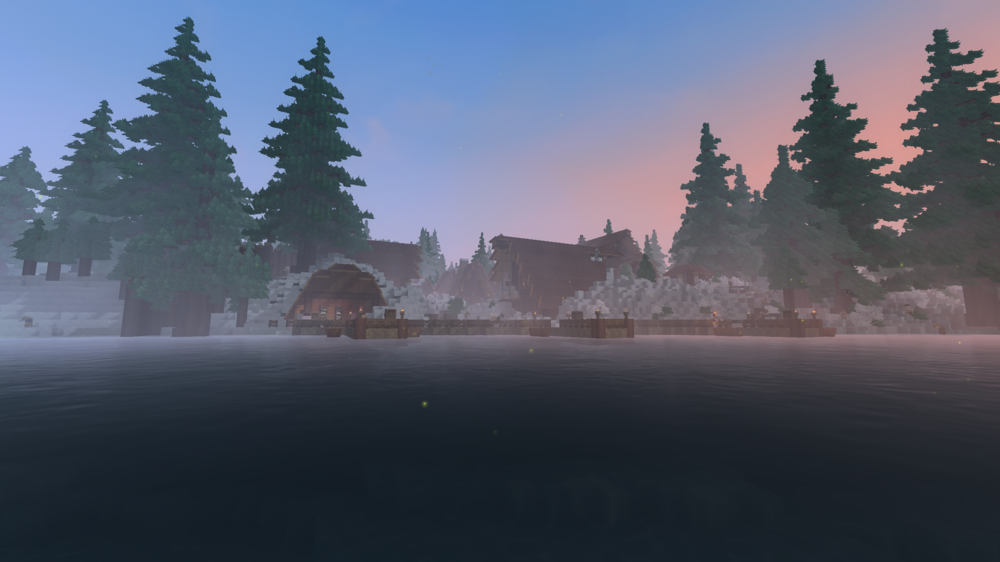
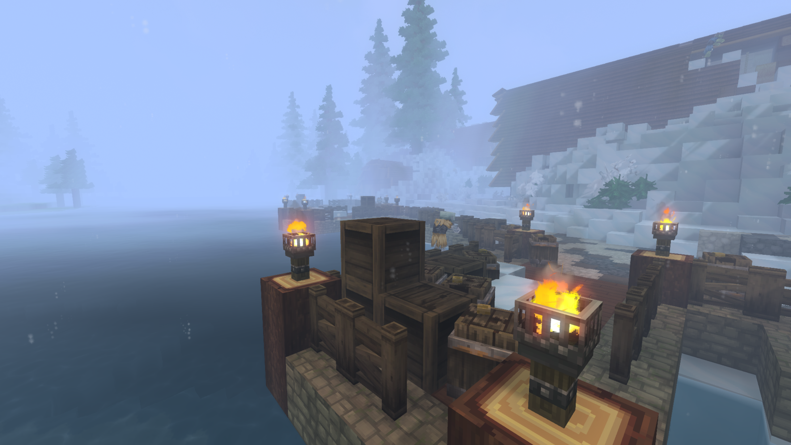
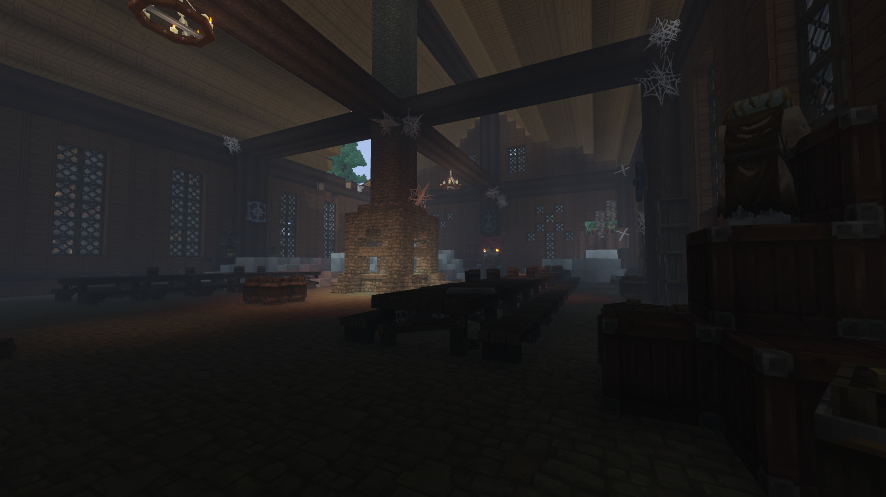
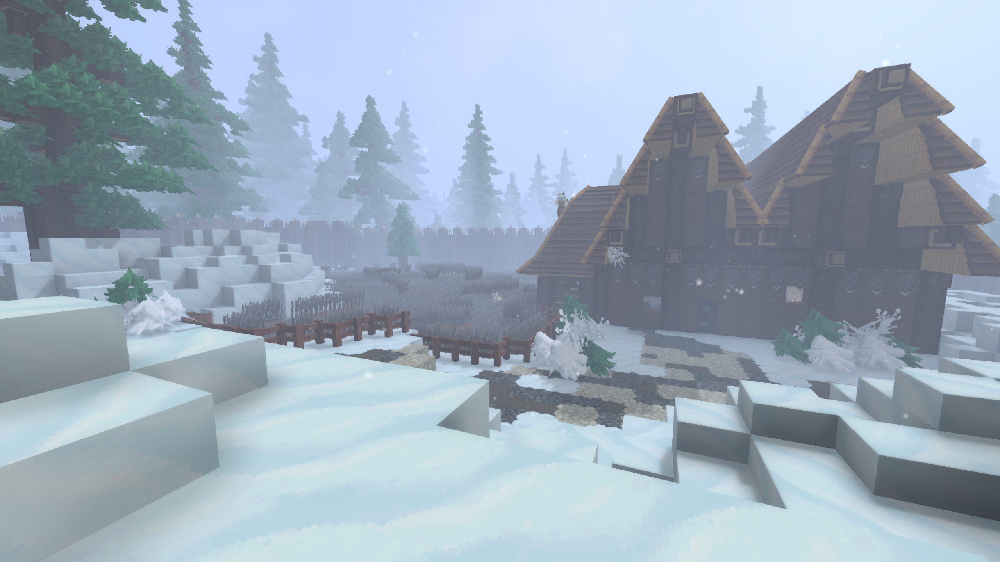
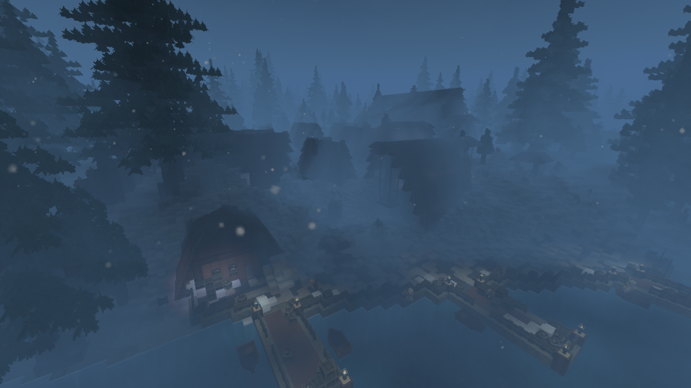
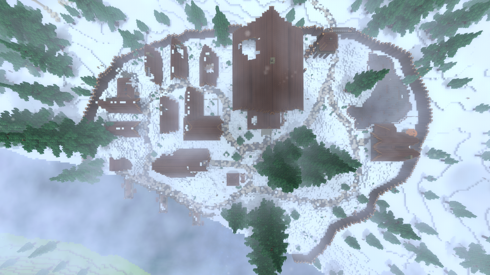

Nestled along a freezing, snow-dusted shoreline, the Viking Village stands as a silent, frosted monument to a bygone era—a place where the living have long vanished, leaving only ghosts and remnants of the past behind.
Viking Village

| Location Information | |
|---|---|
| Coordinates | X: 617, Z: 787 |
| Area Type | Rural Ruins |
| Mob Threat | Very High |
| Bandit Threat | High |
| Number of Chests | 19 |
| Water Source | Yes |
| Clean Water Source | No |
| Fireplace | No |
| Chef's Stove | No |
| Workbench | No |
| Available Loot | ||
|---|---|---|
| 🍎 Food | ✗ | |
| 🥛 Civilian | Tier 1 | ✗ | |
| ✂️ Civilian | Tier 2 | ✗ | |
| 🛠️ Civilian | Tier 3 | 4 | |
| 🛡️ Military | Tier 1 | ✗ | |
| ⚔️ Military | Tier 2 | 4 | |
| 🏹 Military | Tier 3 | 11 | |
| 🌟 Legendary | ✗ | |
Lore
Nestled along a freezing, snow-dusted shoreline, the Viking Village stands as a silent, frosted monument to a bygone era—a place where the living have long vanished, leaving only ghosts and remnants of the past behind.
Echoes of a Previous Life
No actual, living Vikings tread the icy wooden docks or the snow-blanketed paths of this northern settlement anymore. Instead, the village exists in a state of suspended animation, frozen by the biting cold and the sudden end of its people. Throughout the frosted palisade and the scattered wooden longhouses, clear traces of a vibrant previous life remain—crates left behind on the wooden piers, abandoned farming plots dusted in fresh frost, and empty small boats bobbing in the freezing dark waters.
At the heart of the settlement sits a massive, grand Great Hall. Once a bustling center for feasting, drinking, and roaring fires, its interior has grown cold and dark. Worn wooden tables stand empty, dust and cobwebs cling to the high overhead beams, and the giant brick hearth sits dead, filled only with old ash and drifted snow from gaps in the roof.
The Lone Survivor of the Well
While the village appears completely abandoned to the elements, local legends and faint whispers whisper of a different story. Supposedly, when the ultimate calamity hit the settlement, one sole survivor managed to escape the fate of his kin. Desperate to hide from whatever tore through the village, he dug deep under the central water well, carving out a secret bunker beneath the frozen earth.
Whether he survived the long years in the pitch black or succumbed to the freezing dark remains unknown, but those who brave the depths of the old stone well might just find him—or whatever he left behind—still waiting in the dark.
Anatomy of the Frozen Settlement
- The High Palisade, a sturdy wooden wall encircling the entire village to ward off threats from the surrounding pine forest.
- The Great Hall, a towering central structure with sweeping, tiered wooden roofs that dominates the village layout.
- The Harbor Docks, lined with lit torches that cast a lonely glow across empty wooden loading platforms.
- The Village Well, an unassuming stone structure hiding a subterranean passage dug out by a desperate survivor.
Present Day
For travelers navigating the northern coastlines, the Viking Village is an eerie, mid-value exploration zone. The lack of many active hostiles makes it a seemingly peaceful place to scavenge for old tools, materials, and basic provisions stored inside the abandoned huts.
Step softly through the frosted gates of the Viking Village, for though the longboats are gone and the hearths are cold, the secrets buried beneath the well still draw breath in the dark.
Gallery




